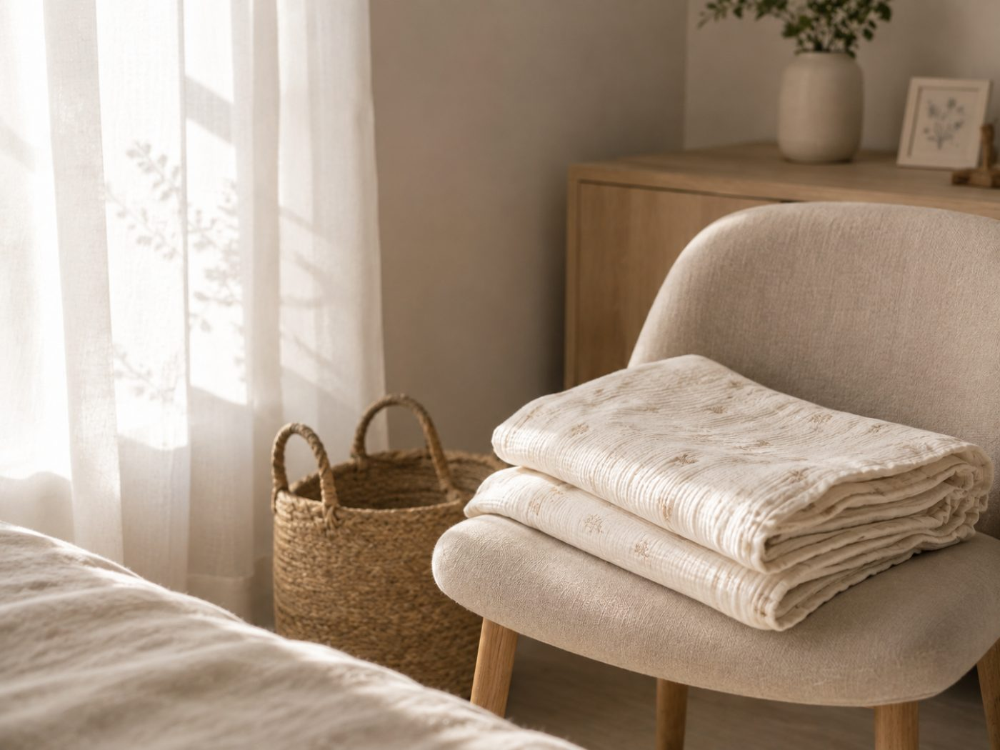

POSTPARTUM
普通のやり方は、
当てはまらない。
出産後に式を挙げる人は増えています。ただし体の状態も、使える時間も、産前とは別物です。同じ計画を立てると必ず崩れます。

先に書いておきます。運動を始める時期は、産後健診で医師の許可を得てから決めてください。回復の速さは人によって大きく違い、出産の経過によっても変わります。ここに書くのは一般的な目安です。
時期の目安
| 時期 | できること |
|---|---|
| 産後〜1ヶ月 | 回復が最優先。体を動かす段階ではありません |
| 1ヶ月健診 | 医師に確認する。ここが起点になります |
| 許可が出てから | 歩く。姿勢を整える。負荷の軽いものから |
| 3ヶ月以降 | 状態を見ながら通常の運動へ |
| 授乳中 | 極端な食事制限をしない。量は減らさない |
授乳中に避けること
- 食事量を減らす。授乳中は必要量が増えています。減らすと母乳と体調の両方に出ます
- 極端な糖質制限。体力が持ちません。育児と両立できない方法は選ばない
- 置き換えダイエット。栄養が偏ります。この時期には向きません
- サプリの自己判断での追加。授乳中に避けるべき成分があります。医師か薬剤師に確認を
逆にたんぱく質は意識して増やしてください。足りない状態が続くと、髪が抜けやすくなります。産後の抜け毛はホルモンの影響が大きいのですが、栄養不足が重なると回復も遅れます。
必要量の目安はたんぱく質の摂り方に。
時間の前提が違う
ジムに通う、決まった時間にレッスンを受ける。これらは子どもがいると成立しません。「毎週火曜19時」のような固定の予定は、その日に熱を出せば終わります。
予約が不要なもの、中断できるもの、家から出ないもの。この3つの条件で選ぶと続きます。

食事は作らない前提で
育児中に自分の食事を作る余裕はまずありません。ここで一番起きやすいのが、自分の分だけ適当になることです。結果としてたんぱく質が足りず、髪と肌に出ます。
現実的な目標を置く
産前の体重に戻すことを目標にすると、多くの場合届かずに終わります。目標はドレスが合うことで、体重の数字ではありません。
そして骨盤の状態は自力では判断できません。産後は特に、姿勢が変わったまま戻っていないことがあります。一度見てもらうと、やるべきことが具体的になります。
ドレスの選び方も変わる
授乳がある場合、着脱のしやすさが重要になります。また、体型が変わりやすい時期なので最終フィッティングを遅めに設定できるかを確認してください。
次に読む
支えるものを使う
産後は骨盤まわりが不安定な状態が続きます。加えて抱っこの姿勢が毎日続くので、腰に負担が集中します。この時期に無理な運動で整えようとするより、支えを使って日常の姿勢を保つほうが安全です。
着るだけで体型が変わるものではありません。運動を始められる時期まで、負担を分散させるための道具として考えてください。
マジカルシェリー
通販産後と子育て世代に向けて設計された骨盤ガードル。整体師が監修しています。抱っこで腰に負担がかかっている時期に、支えとして使うもの。着用で体型が変わるものではありませんが、日常の姿勢を保ちやすくなります。返金保証があるので、合うかどうかを試してから判断できます。
商品を見る ＞